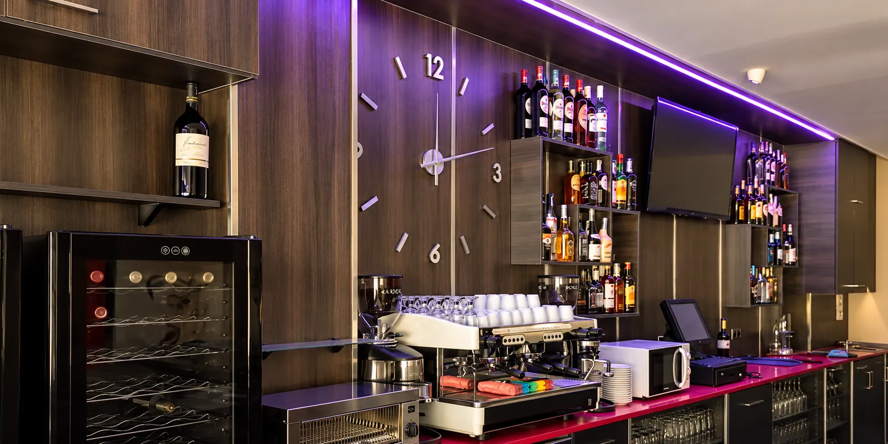
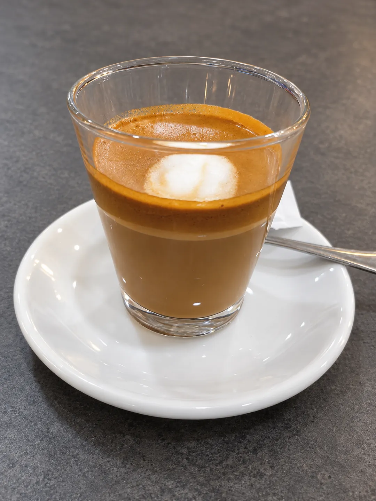
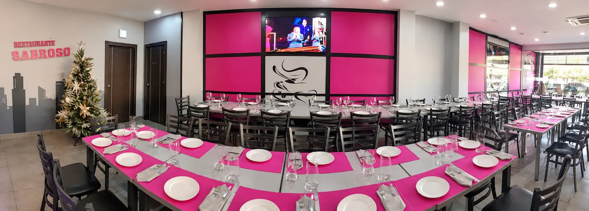
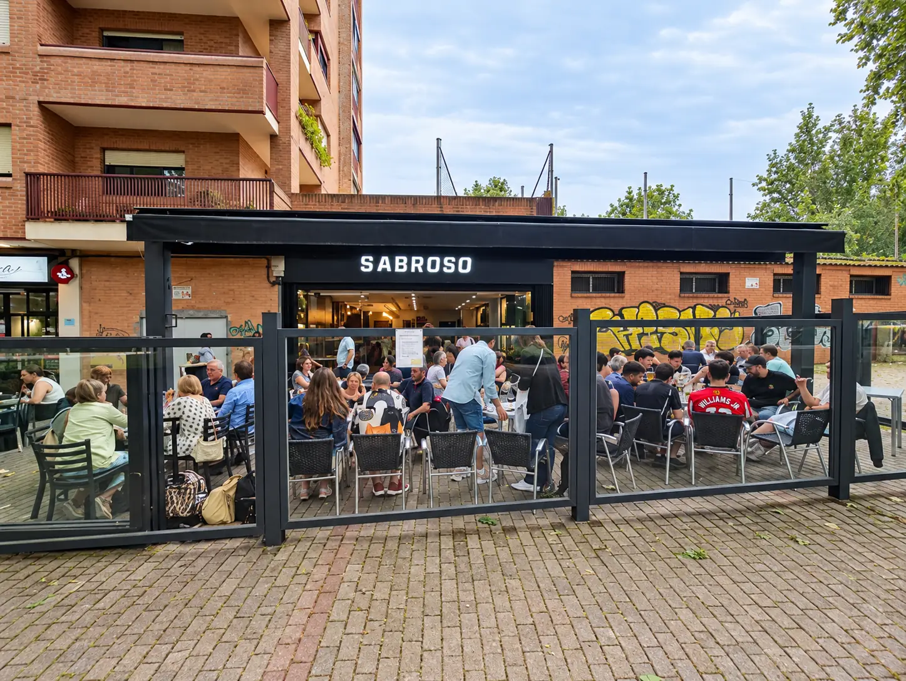
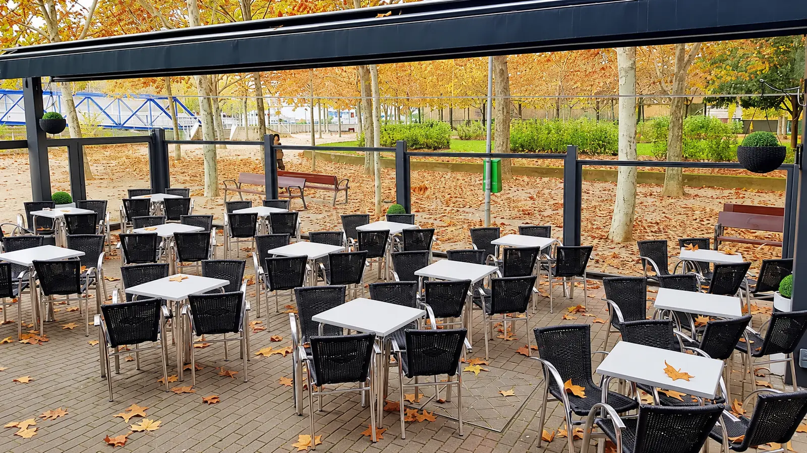
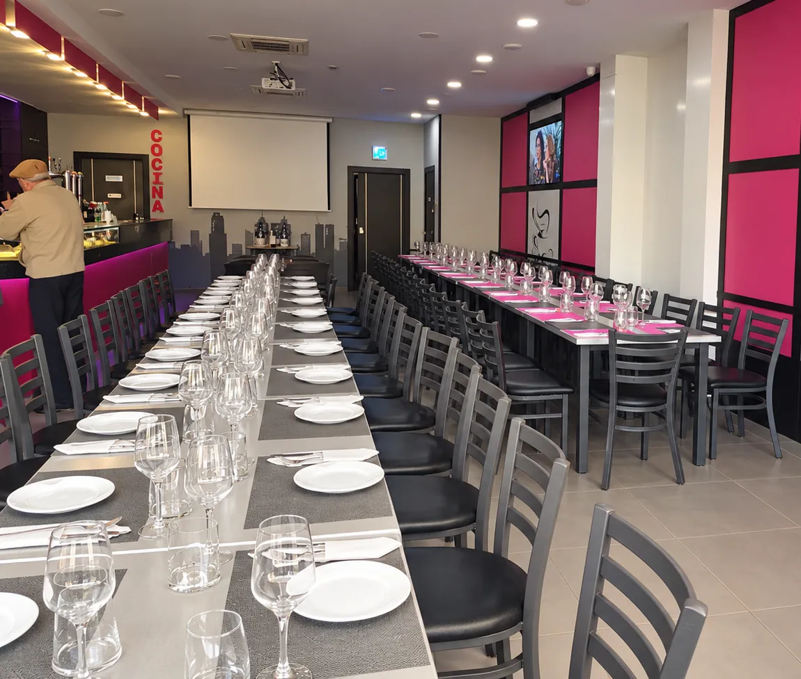

Bar y restaurante en Logroño
El restaurante.
Barra, comedor y terraza en la calle Duques de Nájera.

La barra
El primer pincho, aquí.
Cafetera, vinoteca y botellero.

El café
Un cortado, en vaso.
Café servido en la barra.

El comedor
Mesas para quedarse.
Mesas largas para comer y cenar.
La casa, en fotos.


